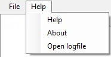

In this file, all the operations excecuted by the program is stored.

'Open logfile' opens the file and displays the content
'Open logfile' opens the file and displays the content
The operations being logged are:
- Scanning
- The path that was scanned
- The date and time the scan started
- Moving
- The path the folder was moved from
- The path the folder was moved to
- The file(s) that were moved
- The date and time the move completed
- Deletion
- Folder: Adds the path of the deleted folder
- File: Lists the files that were deleted
- The date and time the deletion completed
<Current version 1.0.0.0>